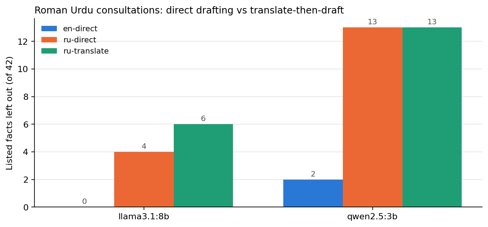

Experiment · Clinical AI · Roman Urdu
Translating Roman Urdu first did not make a local AI's clinic notes safer
I tested the fix I suggested last week. The translation step brought its own errors, and the smaller model skipped it altogether.
By Muzammal Hussain · 28 October 2026 · 4 min read
Last week a 3B local model wrote physiotherapy notes from Roman Urdu consultations and got the body part wrong in three of four notes (read it here). The obvious fix is to translate the consultation into English first and then write the note, since the same model did well in English. I tested that fix on the same four consultations with two local models, qwen2.5:3b and llama3.1:8b.
Key findings
- With llama3.1:8b, translating first made things worse: critical facts missing rose from 3 to 5 of 42 listed facts.
- The translation changed side and body part: the neck's left side became the right, and a stiff shoulder became lower back pain.
- qwen2.5:3b did not translate at all. In all four cases it returned the Roman Urdu text unchanged, and the pipeline carried on as if it had worked.
- The larger model helped more than the pipeline: drafting directly from Roman Urdu, llama3.1:8b missed 4 of 42 facts against 13 for qwen2.5:3b.
What I did
The four consultations are fictional and the same as last time: lower back pain, a twisted knee, a stiff shoulder with diabetes, and neck pain from desk work, each in English and Roman Urdu with the same facts. No real patient data was used. Both models ran locally through Ollama on a MacBook M4 (16 GB) at temperature 0. For each model and consultation there were three conditions:
- English, direct: the English transcript to a SOAP note (the reference).
- Roman Urdu, direct: the Roman Urdu transcript to a SOAP note.
- Roman Urdu, translate first: the model translates the transcript into English, then writes the note from its own translation.
A script checked 42 listed facts per condition, some marked critical (red-flag answers, medication, the injured side, referrals). A new check flagged notes that missed the main body part or named one that never came up in the consultation. On last week's notes it caught all three wrong-body-part notes and no English note.
Results

| Model | Condition | Facts missing | Critical missing | Wrong or missing body part |
|---|---|---|---|---|
| qwen2.5:3b | English | 2 of 42 | 0 | 0 of 4 |
| qwen2.5:3b | Roman Urdu, direct | 13 of 42 | 7 | 3 of 4 |
| qwen2.5:3b | Translate first | not tested: the model returned the input unchanged | ||
| llama3.1:8b | English | 0 of 42 | 0 | 0 of 4 |
| llama3.1:8b | Roman Urdu, direct | 4 of 42 | 3 | 1 of 4 |
| llama3.1:8b | Translate first | 6 of 42 | 5 | 1 of 4 |
What the translation changed
| Consultation | Patient or physio said | llama3.1:8b translation |
|---|---|---|
| Neck pain | "gardan baayen taraf ghumane mein" (turning the neck to the left) | "moving the neck to the right" |
| Stiff shoulder | shoulder stiff for 4 months | "My lower back has been aching for 4 months" |
| Twisted knee | swelled up the same evening; does not lock | "I slept on it that same evening"; "it's not giving way" |
| Lower back pain | "koi sunn-pan nahi" (no numbness) | a second "no problem with urination" |
The translation fixed one error: drafting directly, llama3.1:8b called the twisted knee an ankle injury, and from its own translation it wrote knee. But it broke the shoulder note in the same run, so the net result was worse.
A step that silently did nothing
qwen2.5:3b was asked to translate and gave back the Roman Urdu text word for word, four times out of four. Nothing in the pipeline noticed, so its notes were the same flawed notes as before. A real system needs to check each step, for example stop when the translation is the same as the input and pass the case to a person.
What this means for MeetPhysio
From this data the safer route is to draft directly with the larger model and require a physiotherapist to review the whole note before sign-off. A wrong side or body part leads to treatment and exercises for the wrong area, and even the better route still wrote ankle for a knee once.
Limitations
This is a pilot: four consultations I wrote, two models, one run at temperature 0. The fact and body-part checks use keywords, so a fair translation like "vertigo" for "dizziness" counts as missing, and a fact written wrongly can still count as present. Both models got the same translation prompt; another prompt might get qwen2.5:3b to translate. I did not label every sentence this time, and the transcripts are clean text rather than speech-to-text output.
What I will test next
- Step checks that stop the pipeline when a translation equals the input or a body part changes.
- Sentence-by-sentence labels for the direct llama3.1:8b notes.
- Whisper transcripts in place of clean text.
Follows: Asgari E., Montaña-Brown N., Dubois M., Khalil S., Balloch J., Au Yeung J., Pimenta D. (2025). A framework to assess clinical safety and hallucination rates of LLMs for medical text summarisation. npj Digital Medicine 8, 274. doi:10.1038/s41746-025-01670-7. Models: Qwen2.5 3B and Llama 3.1 8B run locally with Ollama. Every note and translation is in the GitHub repository.